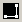
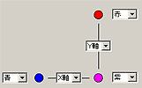

３ＤモニターフォームのXY平面の表示を見ながら設定することをお勧めします。
- このダイアログが表示されるときは、３Ｄモニターフォームの表示は座標系変換を行わない状態になります。
- XY平面の表示は視点によって左右の関係が変わります。見にくい場合は３Ｄ表示設定ダイアログで調整してください。

３ＤモニターフォームのXY平面の表示に近いものを選択してください。見やすくて理解しやすいものを選択してください。
下図のような場合であれば左から二番目を選択すると良いでしょう。

１）マーカ色設定
ダイアログ上の３つの円の脇にあるコンボボックスでマーカ色を選択します。
３ＤモニターフォームのXY平面上のマーカ色が３つの円の色に対応するように設定します。上図の例ならば以下のように設定します。
- ３Ｄモニターフォームに表示されるマーカ色はカメラによって自動的（強制的）に決まります。
- 設置のしかたによってはマーカ色が安定しない場合（赤と青が頻繁に入れ替わる etc.）があります。その場合はカメラの設置や基準マーカの設置を調整してください。
２）座標軸設定
ダイアログ上の２つの座標軸にあるコンボボックスで座標軸を選択します。
- 設置した基準マーカと座標軸の対応を間違えないように注意してください。
- ３Ｄモニターフォームの画像だけではマーカや座標軸の対応がわかりにく場合があります。手でマーカを隠して確認しながら作業を行うと間違いが少なくなります。
３つの基準マーカの中から基準になるものを選択します。
選択した点の座標値は事項で自由に設定できます。
基準点の座標値を設定してください。
cm（センチメートル）単位で小数点以下まで設定可能です。
３Ｄモニターフォームで３つの基準マーカだけが認識されていることを確認しながら「ＯＫ」ボタンを押してください。
次回、本ダイアログを表示して「ＯＫ」ボタンが押されるまでこの設定は保存されます。
「座標変換手法選択ダイアログ」に戻ります。